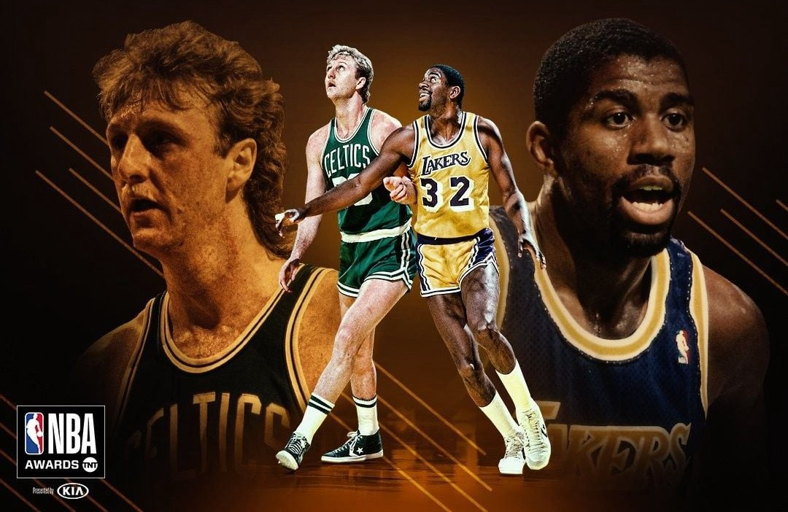
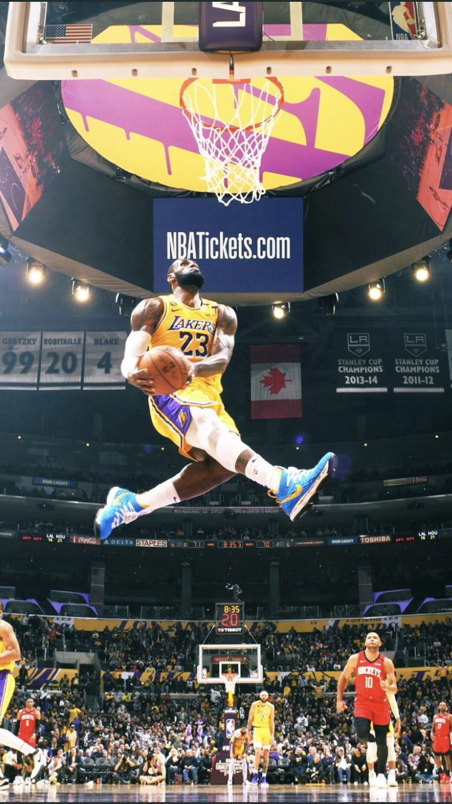
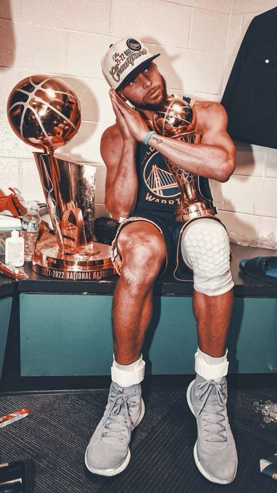
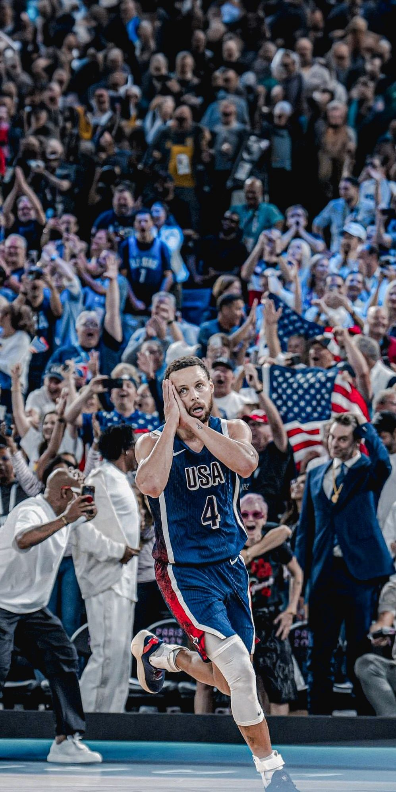
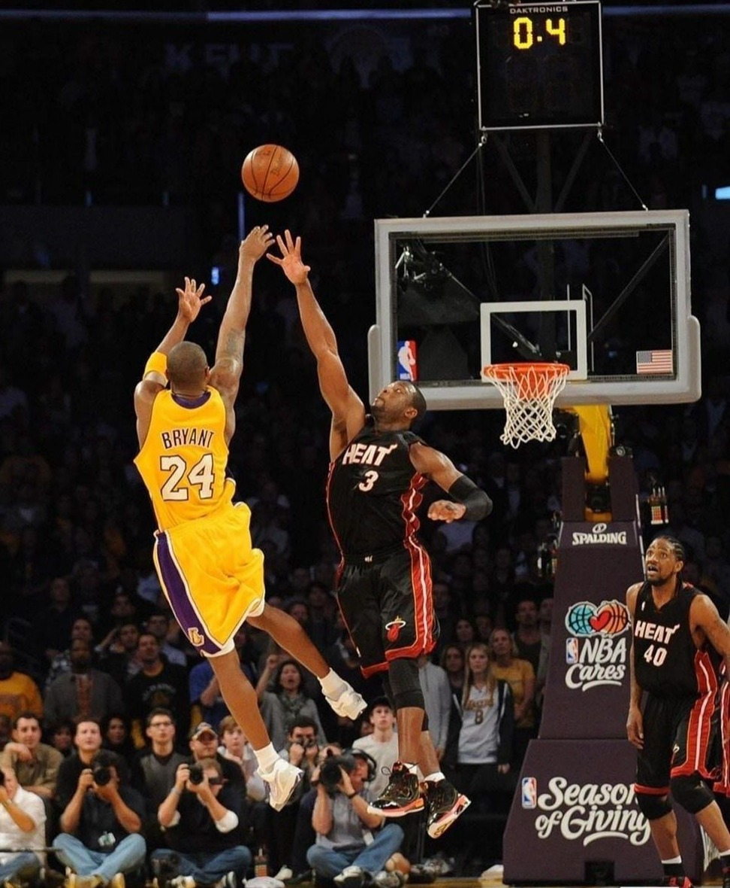
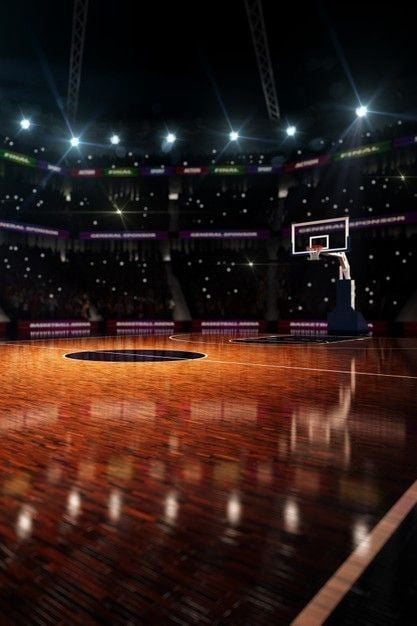

AI Website Generator在创意与竞技的交汇处，设计重新定义篮球的可能。
Where art, performance, and data converge.
Understanding people is the foundation of both basketball and design.
无论是篮球还是设计，核心都是「人」
Basketball focuses on the experiences of players and audiences;
Design focuses on the needs and emotions of users.
Both require empathy — the ability to understand human psychology, behavior, and reaction.
篮球关注球员与观众的体验；
设计关注用户的需求与感受。
两者都依靠同理心——理解「使用者」的心理与行为。
Players read teammates, fans, and opponents to make decisions.
Designers study pain points, habits, and emotions to craft better experiences.
球员要了解队友、观众、对手的反应；
设计师要洞察用户痛点、操作习惯与情绪反应。

Great design and great performance both come from continuous testing and improvement.
无论是设计还是篮球，成功都源于数据与持续优化。
Basketball and design are never perfect on the first try — both rely on data and iteration.
篮球和设计都不是一次成功的。
它们都依靠数据分析与持续改进，不断进步。
Players analyze their shooting accuracy, speed, and heart rate to enhance performance.
Designers test user behavior, click rates, and feedback to refine products.
篮球运动员通过投篮命中率、速度、心率等数据优化表现；
设计师则通过用户测试、点击率与反馈数据来改进体验。

Great results come from great collaboration.
篮球与设计，都依靠团队的默契与沟通。
Basketball is a sport built on trust, timing, and shared goals.
Design is a process built on collaboration, communication, and creative alignment.
篮球是一项讲究配合的运动；
设计是一场跨角色的协作过程。
On the court: the point guard passes, the forward attacks, and the coach strategizes.
In design: graphic designers, product managers, and developers all play their part.
球场上：控卫传球、前锋进攻、教练制定战术。
设计中：平面设计师、产品经理、工程师分工合作。
Both demand communication, trust, and a clear understanding of roles —
because teamwork turns individual talent into collective success.
两者都强调沟通、信任与角色定位，
因为团队精神，才能把个人天赋化为集体成就。

Basketball is more than a sport — it’s a stage for creativity and design.
篮球不仅是竞技，更是创意与美学的舞台。
Every movement, color, and logo tells a story.
From player motion to jersey design, basketball is a performance of creativity and emotion.
每一个动作、每一种配色、每一个Logo，
都在传递一种精神。
从球员的姿态到球鞋造型，
篮球本身就是一场视觉艺术的展演。
Design amplifies emotion — it helps fans see the energy, passion, and culture of the game.
设计放大了情感，让球迷“看见”激情与信念。


Design and basketball both move people — not just through form, but through feeling.
篮球与设计，打动人心的不只是外形，更是情感。
Both basketball stars and designers build emotional connections.
A player inspires passion through performance;
a designer builds trust and identity through design.
篮球明星与设计师都在打造「情感共鸣」。
球星以表现激发粉丝热情，
设计师以作品唤起用户认同。
When performance meets emotion, a brand is born —
a symbol that carries dreams, values, and belief.
当表现与情感结合，品牌便诞生。
它不仅是产品，更是信念、梦想与文化的象征。
篮球与设计虽属不同领域，却同样以人为本、追求创意与完美。它们通过协作与情感表达，让数据化为力量，让美学成为信念，激发人们不断突破与共鸣。
Basketball and design, though different in form, share the same spirit — human-centered, creative, and ever-evolving, turning data into emotion and design into belief.

AI Website Generator